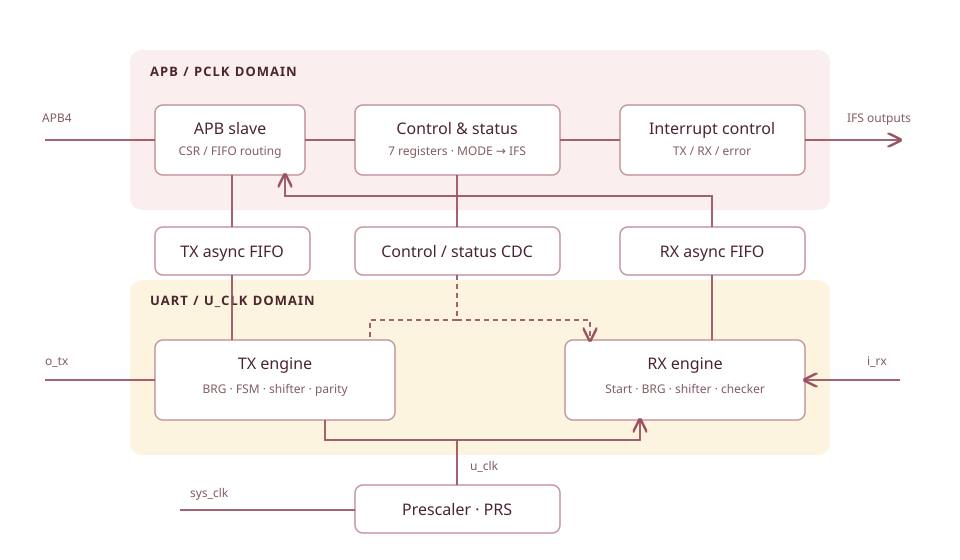

RTL architecture¶
VSUART separates bus access, serial transmission, and serial reception. A prescaler produces u_clk; asynchronous FIFOs and CDC logic move data, configuration, and status between clock domains.

This is a functional summary of the source structure. See the original block diagram in FunctionalSpec, Figure 1-1.
APB, control, and status¶
| Module | Responsibility |
|---|---|
vsuart_apb_slv |
Route APB accesses to the CSR bank or FIFO data port; generate responses |
vsuart_reg |
Implement MODE, CR, STA, PRS, BRG, IE, IFS, and write guards |
vsuart_ifs |
Generate interrupt outputs from flags and enables |
vsuart_prs |
Divide sys_clk into u_clk using PRS |
vsuart_sync_a2u |
Transfer configuration/control from APB to UART |
vsuart_sync_u2a |
Transfer status/events from UART to APB |
TX datapath¶
APB write @ 0xFFFF → TX asynchronous FIFO → parallel-to-serial shifter
↓
parity + controller + bit counter → TX generator → o_tx
vsuart_tx_brggenerates transmit baud enables.vsuart_tx_ctrlhandles idle, start, data, parity, and stop states.vsuart_tx_p2s_shifterserializes the payload.vsuart_tx_paritygenerates parity when selected by the frame format.vsuart_tx_genselects the output line value for each frame phase.
The TX FIFO is an asc_fifo instance in the top module. It accepts APB-domain writes and supplies UART-domain reads. MODE selects the frame format.
RX datapath¶
i_rx → start detector → sampled serial-to-parallel shifter → RX FIFO → APB read
↓
parity/frame checker → status / error
vsuart_rx_start detects the start condition; vsuart_rx_brg controls sampling. The controller, bit counter, and vsuart_rx_s2p_shifter assemble data. vsuart_rx_checker checks parity and stop bits; vsuart_rx_fifo buffers received data and provides status.
Clock-domain crossings¶
DesignSpec §1.2 records two changes to reused common modules:
- Handshake-based CDC for transfers from a faster clock domain to a slower domain.
- Additional character-count information in the asynchronous FIFO.
Shared RTL is under 0_rtl/common/, including cdc_unit, cdc_unit_hs, edge_det, bit_cnt, register primitives, and asc_fifo/.
FunctionalSpec requires Fsys > Fpclk > Fu. The presence of CDC modules describes structure; timing closure and CDC sign-off require separate evidence.
Top-level parameters¶
vsuart parameter |
Default in 0_rtl/vsuart.v |
|---|---|
ADDR_W |
16 |
DATA_W |
32 |
FIFO_DEPTH |
128 |
FIFO_DATA_W |
9 |
STRB_W |
DATA_W / 8; source comment says not to override directly |
vsuart_define.v also contains a FIFO_DEPTH=32 macro. The testbench instantiates the top without parameter overrides, so the top default applies to that instance. Check the elaborated parameters when integrating the IP.
Design document maturity
DesignSpec revision 0.01 contains an older hierarchy, repeated entries, and incomplete detailed sections. The module names above were checked against the RTL. Implementation descriptions supplement the PDF rather than quoting missing sections.
Sources: DesignSpec §1, PDF pp. 4–5, FunctionalSpec §1.2, PDF pp. 5–6, 0_rtl/vsuart.v, vsuart_tx.v, vsuart_rx.v, and vsuart_define.v.